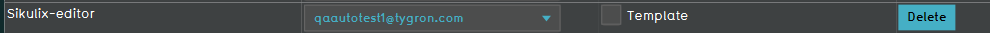
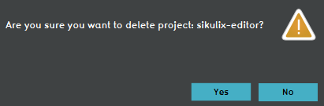

import logging;reload(logging) FORMAT="%(asctime)-8s %(message)s" logging.basicConfig(format=FORMAT, filename="test.log", level=logging.DEBUG) logging.info("[info] Remove a project from the domain and verify if so afterwards...") click() wait(,5) click() for x in range(0,120): while not exists(Pattern().similar(0.89).targetOffset(430,-1),1): loc = SCREEN.getCenter() wheel(loc,WHEEL_DOWN,5) wait(3) break click(Pattern().similar(0.89).targetOffset(430,-1)) wait(,5) click(Pattern().targetOffset(74,48)) waitVanish(Pattern().similar(0.91),5) if exists(Pattern().similar(0.90)): print("[error] Project deletion failed!") logging.error("[error] Project deletion failed!") exit(1) else: print("[success] Project deletion successful!") logging.info("[success] Project deletion successful!")